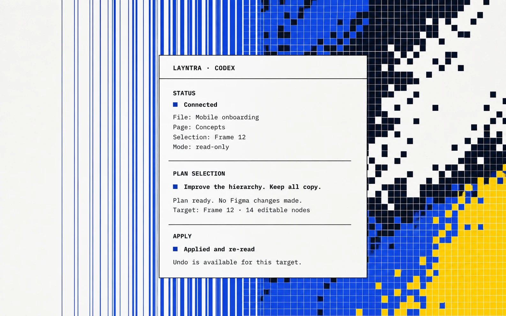

01
Inspect
Check the active file, page, selection, and editable node structure without changing Figma.
Open source · Codex plugin + Figma companion
For product managers and nontechnical builders. Inspect, plan, apply, and undo editable Figma changes from Codex. The bridge stays on your machine. No Figma API token. No hosted Layntra service.
Free under the MIT License · macOS · Node.js 20+ · Codex Desktop or CLI · Figma Desktop

The write path
01
Check the active file, page, selection, and editable node structure without changing Figma.
02
Review the intended changes before any write. A plan is not hidden inside a chat response.
03
Layntra rechecks the target and refuses the write if the page or selection changed.
04
Undo is guarded against the same target, then the result is read back for verification.
Local by design
Figma access can vary by plan, workspace, and seat. Layntra works where Figma Design plugins are permitted; it does not bypass Figma permissions or plan restrictions.
Read the hosted Figma MCP comparisonOne local path
$layntra in Codex.Install in three steps
You install one Codex plugin and import one Figma companion. The beginner guide shows every menu and the exact file to choose.
01
Clone the repository and run the included installer.
./scripts/install.sh02
Download the ZIP, unzip it, and import the included manifest.json.
manifest.json
03
Keep the companion open and enter this in a new Codex task.
$layntra statusVersion 0.1.0
Run Layntra locally with Codex and your Figma desktop. No tokens. No cloud. Just a clear path you can trust.